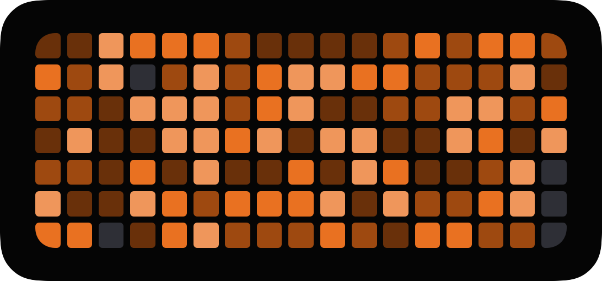

🌱 TokenGrass
Your Claude Code usage, as grass
A GitHub-style contribution graph, right on your iPhone home screen.

Download for MacNotarized · macOS 14+ · freeThe Mac app collects your Claude Code usage and syncs it to your iPhone. Open source (MIT).
📱 You're on your phone. The helper installs on your Mac (where you use Claude Code).
Open this page on your Mac: shw1606.github.io/token-grass — or AirDrop / message this link to yourself.
1Download and open the Mac app. It lives in your menu bar and reads your Claude Code usage.
2It syncs a tiny summary to your iPhone over iCloud. No account, no servers, nothing sent to anyone.
3Add the TokenGrass widget to your home screen and watch your grass grow.